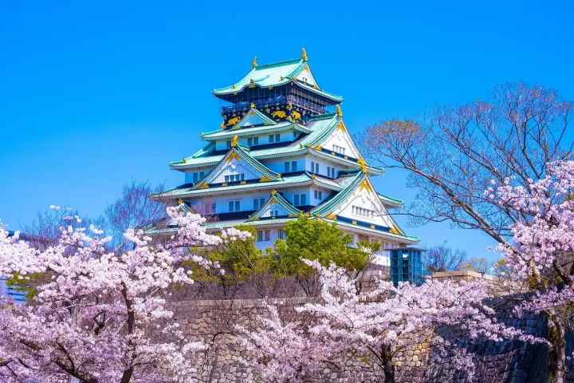
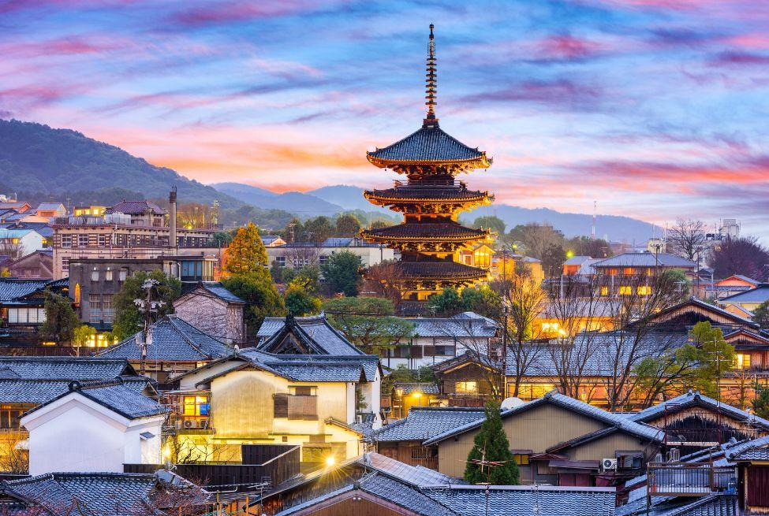

Tokyo
Tokyo, a capital do Japão, é uma metrópole vibrante onde a tradição e a modernidade coexistem de maneira harmoniosa. A cidade oferece uma rica tapeçaria de experiências, desde templos históricos como o Senso-ji e o Palácio Imperial até bairros futuristas como Shibuya e Shinjuku. Conhecida por sua gastronomia de renome mundial, Tóquio encanta com restaurantes Michelin e mercados de frutos do mar frescos. A cidade também é um epicentro de cultura, moda e tecnologia, com museus de classe mundial, teatros tradicionais e uma próspera cena de anime e manga. Tóquio é uma cidade onde o passado e o futuro se encontram, proporcionando uma experiência inesquecível aos seus visitantes.

Osaka
Osaka, a terceira maior cidade do Japão, é conhecida por sua vibrante cultura urbana e sua culinária excepcional. Situada na região de Kansai, Osaka combina a odernidade de arranha-céus e centros comerciais com a tradição de templos e santuários históricos. A cidade é famosa por suas delícias gastronômicas, como takoyaki e okonomiyaki, e por seus animados distritos de entretenimento, como Dotonbori, repletos de neon e vida noturna. Com importantes marcos como o Castelo de Osaka e o aquário Kaiyukan, além de ser um importante centro de negócios e comércio, Osaka oferece uma experiência dinâmica e acolhedora, refletindo a hospitalidade calorosa de seus habitantes.
Kyoto
Kyoto, antiga capital imperial do Japão, é uma cidade rica em história e cultura. Conhecida por seus inúmeros templos budistas, santuários xintoístas, jardins tradicionais e palácios imperiais, Kyoto oferece uma janela para o passado do Japão. Maravilhas como o Templo Kinkaku-ji (Pavilhão Dourado), o Templo Fushimi Inari com seus milhares de torii vermelhos e o Castelo Nijo são imperdíveis. As ruas de Gion, o famoso distrito de gueixas, são encantadoras com suas casas de chá e arquitetura tradicional. Kyoto também é famosa por suas cerimônias de chá e festivais sazonais, que destacam a beleza das flores de cerejeira na primavera e as folhas vermelhas no outono. É uma cidade onde a herança cultural do Japão é preservada e celebrada em cada esquina.
